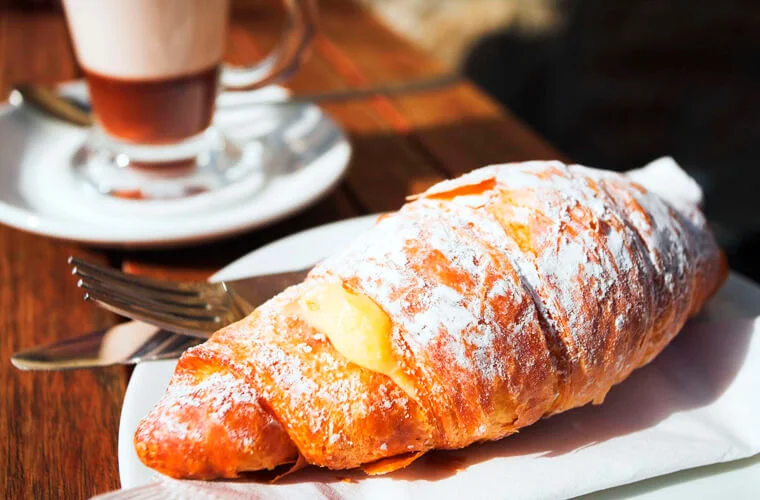
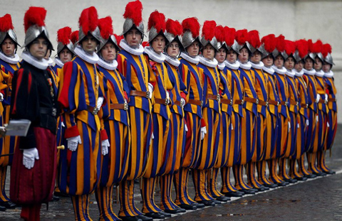

Визначні пам'ятки
Величний собор Святого Петра та музеї Ватикану з їх незліченними витворами мистецтва вражають уяву з першої хвилини. А розпис Сікстинської капели пензля Мікеланджело залишає просто безмовними.

Кухня та гастрономія
Оскільки Ватикан є частиною Риму, після довгих черг до музеїв ми насолоджувалися традиційною італійською випічкою, римським джелато та кавою в затишних кав'ярнях просто біля стін карликової держави.

Культура та традиції
Тут панує особлива атмосфера спокою, поваги до багатовікових традицій та порядку. Швейцарська гвардія у своїй яскравої історичній формі додає цьому місцю неповторного колориту.

Особисті історії
Підйом на купол собору Святого Петра разом із друзями виявився справжнім випробуванням через сотні вузьких сходинок, але панорамний вид на весь Рим і сади Ватикану на вершині важив кожної витраченої зусилля!